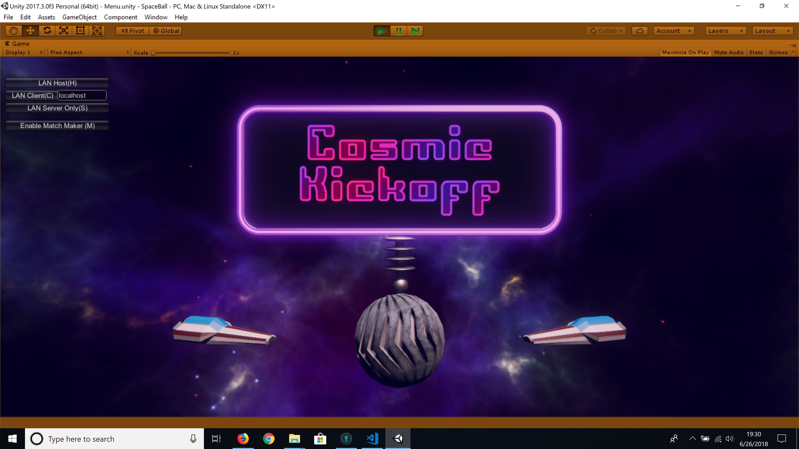

I and the rest of the Game Analysis and Design Interest Group collaborated to make this game during the Spring 2018 Semester.
The first game made by GADIG to feature online multiplayer, the main pitch of this game is Rocket League in space, adding a third dimension to the players' movements.

My contribution:As a member of the programming team I implemented the goal and tally, making sure that points were tracked for all clients, then implemented all sound effects including modulation of an player' engine sound pitch as they thrust.